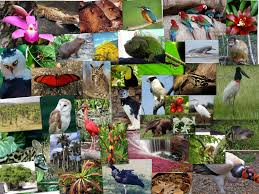
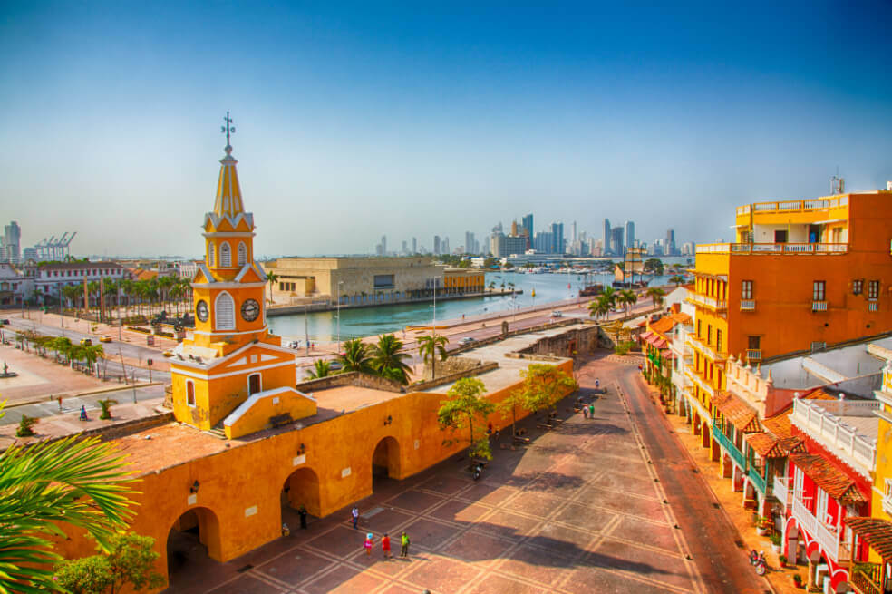

En Colombia se pueden evidenciar cinco regiones naturales por sus diferentes relieves, ecosistemas y climas.
Gracias a los diferentes ecosistemas que se pueden encontrar a lo largo de su territorio, el país tiene el número
más grande de especies por unidad de área en el planeta, siendo el segundo país más megadiverso del mundo. Además,
Colombia posee aproximadamente el 60% de los páramos existentes en el planeta, y cerca de 31 700 humedales. Cabe
anotar que la mayor diversidad de flora y fauna dentro de sus biomas terrestres se halla en las selvas lluviosas,
ubicadas en la Región Pacífica, la selva amazónica y el bosque andino. En 1994 Colombia suscribió la Política
Nacional de Biodiversidad que conformó el Sistema Naciónal de Áreas Protegidas que está a cargo 42 Parques Nacionales
Naturales, 12 Santuarios de Fauna y Flora, 2 Reservas Nacionales Naturales, 1 Vía Parque y 1 Área Natural Única.
Estas áreas son de suma importancia para protección de ecosistemas, la diversidad biológica, y la producción de agua.
Se estima que aproximadamente el agua que se produce en estas zonas abastece a 25 millones de personas.

Colombia se encuentra ubicada en América, en el extremo noroccidental de América del Sur. El país es travesado por la
cordillera de los Andes y la llanura amazónica, es el único país de América del Sur con costas sobre los océanos
Atlántico y Pacífico. Su ubicación latitudinal corresponde a 12º 27´46" norte y 4º 13´ 30" de latitud sur, lo cual
corresponde a la zona intertropical. El área total de Colombia es de 2 129 748 km² conformados por el territorio
continental y las aguas marítimas. El territorio continental de Colombia es de 1 141 748 km²3 y el marítimo de 988 000 km²,
de los cuales 658 000 km² están en el mar Caribe y 330 000 km² en el océano Pacífico donde se encuentran las islas de
Gorgona y Malpelo. Colombia posee diferentes zonas climáticas. Por debajo de 1000 metros (3281 pies) de altura el clima
es cálido (tierra caliente), donde las temperaturas están por encima de 24 °C (75.2 °F). Cerca de 82,5 % de la
superficie total del país se encuentra en clima cálido. La mayoría de la población del país vive en el clima templado
(tierra templada, entre 1000 y 2000 metros de altura (3284 pies y 6562 pies), donde las temperaturas varían entre
17 y 24 °C (62.6 y 75.2 °F) y el clima frío (tierra fría, 2000 y 3000 metros de altura (6565 y 9843 pies).